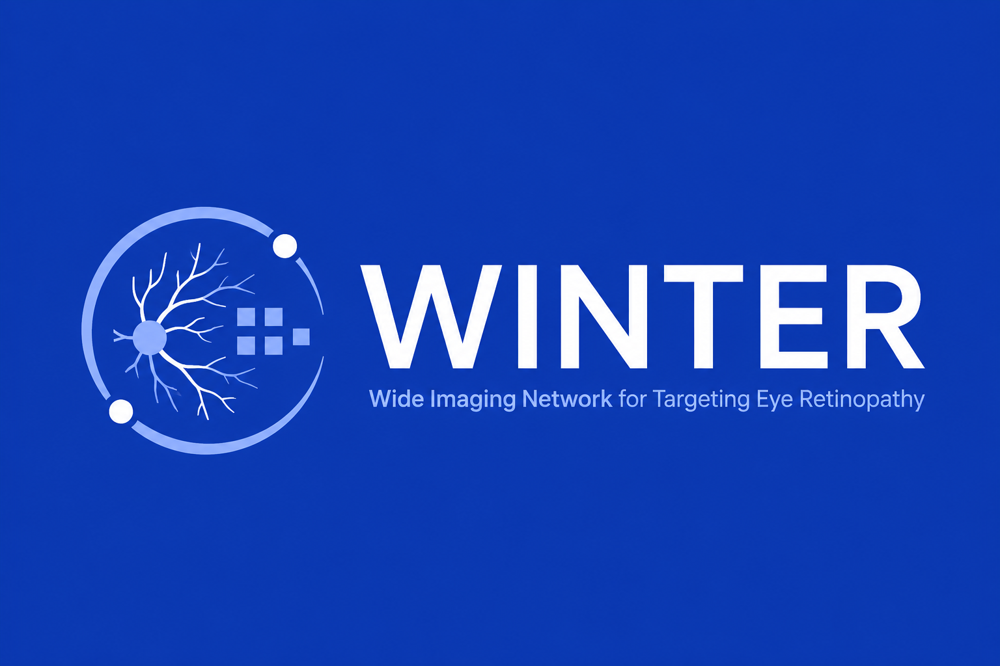

Wide Imaging Network for Targeting Eye Retinopathy
안저 사진 기반 임상 판단 보조 도구 — 안과 전문의가 아닌 의료진을 위한 설계
설계 프로토타입
모델 미연결
레이아웃 확인용 배포
아래 화면은 컴포넌트 배치와 인터랙션을 확인하기 위한 디자인 프로토타입입니다. 표시되는 수치는 전부 시연용 목업이며, 학습된 모델이 낸 값이 아닙니다.
이 배포에는 안저 영상이 포함되지 않았습니다.
데이터셋 재배포 조건이 확정되지 않아 샘플 이미지를 저장소에서 제외했습니다.
사진 영역 8곳은 빈 상태로 보이며, 레이아웃·오버레이·인터랙션 확인이 이 배포의 목적입니다.
프로토타입은 1920×1080 고정 캔버스로 설계돼 있습니다. 더 작은 화면에서는 잘려 보입니다.
React와 컴파일러를 실행 시점에 CDN에서 받아오므로 첫 로딩이 몇 초 걸릴 수 있습니다.